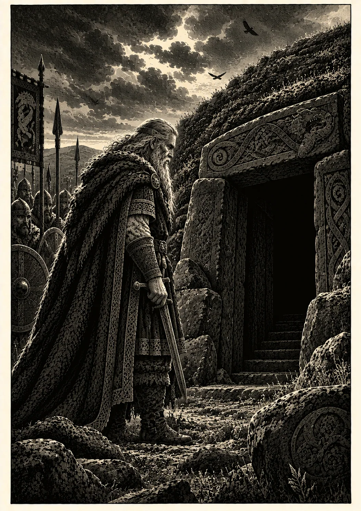

Beowulf: el héroe detrás de la leyenda
Hay historias que sobreviven porque hablan de monstruos. Otras sobreviven porque, detrás de ellos, hablan de nosotros.
Hace más de mil años, en algún lugar de la Inglaterra anglosajona, alguien contó la historia de un guerrero llamado Beowulf. No sabemos quién fue aquel poeta ni podemos determinar con certeza cuándo comenzó a tomar forma el relato. Lo que sí sabemos es que la historia atravesó siglos, incendios, guerras y transformaciones culturales hasta llegar a nosotros.
En apariencia, su argumento podría resumirse con sorprendente facilidad: un joven guerrero viaja a una tierra extranjera para enfrentarse a un monstruo; después combate a una segunda criatura y, muchos años más tarde, ya convertido en rey, debe enfrentarse a un dragón.
Pero Beowulf no ha sobrevivido durante más de un milenio solamente porque contiene monstruos.
Detrás de Grendel, de su madre y del dragón existe un mundo completo. Un mundo construido alrededor de la lealtad, la memoria, la palabra dada, el prestigio y la pertenencia. Y en el centro de ese mundo hay una pregunta mucho más inquietante que cualquier criatura:
¿Qué queda de un hombre cuando su vida termina?
Cuando el mundo cabía dentro de una sala
Para comprender Beowulf hay que entrar primero en Heorot.
Hrothgar, rey de los daneses, ha levantado una gran sala donde su pueblo puede reunirse. Allí se bebe hidromiel, se escuchan historias, se celebran victorias, se reciben visitantes y el rey recompensa a sus guerreros.
Para nosotros puede parecer simplemente el escenario donde comenzará la aventura. Para quienes habitaban el mundo que recuerda el poema, significaba mucho más.
La gran sala era una representación física de la comunidad. Dentro de sus muros existía un orden: había un rey que protegía, guerreros que le debían fidelidad, regalos que expresaban reconocimiento y relatos que conservaban la memoria de quienes habían vivido antes.
Por eso Grendel no ataca simplemente un edificio. Ataca aquello que sucede dentro.
El monstruo escucha desde la oscuridad la música y la alegría de los hombres. Después entra en Heorot y transforma el lugar de reunión en un espacio de terror.
La oposición es extraordinariamente sencilla: dentro de la sala existe la comunidad; fuera de ella comienza lo desconocido. Y desde ese exterior llega el monstruo.
Un héroe debe hacerse digno de su nombre
Cuando Beowulf aparece por primera vez no es todavía el anciano rey que recordará la posteridad.
Es un joven guerrero gauta que cruza el mar acompañado por otros hombres porque ha oído hablar de la desgracia de Hrothgar.
Tiene linaje. Tiene fuerza. Tiene confianza. Pero eso no basta.
En el mundo heroico del poema, la reputación debe construirse mediante acciones. Un nombre heredado puede abrir una puerta; sólo los propios actos determinan qué recordarán los demás cuando uno haya muerto.
De ahí surge una característica fundamental de Beowulf: el héroe sabe constantemente que será observado, juzgado y recordado.
Incluso sus discursos forman parte de esa construcción. Antes de realizar una hazaña declara aquello que está dispuesto a hacer. Después deberá demostrar que sus palabras tenían peso.
La valentía no consiste únicamente en no sentir miedo. Significa también estar dispuesto a responder por aquello que uno ha prometido. Palabra y acción deben coincidir.
Wyrd: vivir sabiendo que todo termina
Hay una palabra que aparece repetidamente en el mundo de Beowulf: Wyrd.
Traducirla simplemente como «destino» permite aproximarnos a ella, pero no agota completamente su significado. Wyrd está relacionada con aquello que acontece, con lo que llega a cumplirse y con una concepción del mundo en la que incluso el hombre más poderoso debe reconocer que existen fuerzas que no controla.
Lo fascinante es que el poema que hemos recibido conserva esa antigua sensibilidad germánica al mismo tiempo que interpreta muchos acontecimientos desde una perspectiva cristiana.
Wyrd y Dios conviven en sus páginas. No siempre de manera perfectamente ordenada. Y precisamente por eso resultan interesantes.
Beowulf pertenece a un mundo situado entre memorias culturales distintas: conserva héroes, venganzas, monstruos, linajes y antiguas concepciones del destino, pero la voz que los transmite conoce también al Dios cristiano. El poema no elimina completamente una tradición para imponer la otra. Las deja convivir.
Los monstruos viven en los límites
Grendel habita lejos de los hombres. Su madre espera bajo aguas oscuras. El dragón duerme dentro de un antiguo túmulo.
Ninguno pertenece al espacio cotidiano de la comunidad. Los tres existen en sus fronteras.
Por eso sería demasiado sencillo convertirlos en símbolos con una equivalencia exacta: Grendel significa esto, el dragón significa aquello. El poema permite interpretaciones mucho más ricas.
Los monstruos representan también aquello que existe fuera del orden humano. Beowulf debe abandonar repetidamente el espacio seguro para encontrarlos.
Primero espera a Grendel dentro de Heorot. Después desciende hacia un mundo situado bajo las aguas. Finalmente, cuando ya es anciano, camina hacia el túmulo donde habita el dragón.
Cada combate lo lleva un poco más lejos. Y el último ya no permitirá regresar de la misma manera.
Las espadas también recuerdan
En Beowulf, los objetos tienen pasado.
Una espada no es simplemente una espada. Puede haber pertenecido a otro guerrero, haber sido entregada como recompensa, heredada dentro de una familia o utilizada en una batalla cuyo recuerdo continúa vivo.
Hrunting y Nægling tienen nombre. Las armaduras poseen historia. Los tesoros cambian de manos. Los anillos entregados por un rey expresan el vínculo que existe entre quien recompensa y quien recibe.
El mundo material del poema está cargado de memoria.
Eso explica también la importancia de los regalos. Un buen rey no acumula simplemente riqueza: la distribuye. Al entregar objetos valiosos reconoce públicamente las acciones de sus hombres y fortalece los lazos que mantienen unida a la comunidad.
La riqueza inmóvil, por el contrario, comienza a perder su sentido. Y esa idea llegará a adquirir una dimensión enorme al final de la historia.
¿Qué ocurre cuando envejece un héroe?
Quizás ésta sea una de las razones por las que Beowulf resulta mucho más complejo de lo que su fama popular permite imaginar.
El poema no termina cuando el joven derrota a sus monstruos. Lo deja vivir.
Pasarán décadas. Beowulf se convertirá en rey y llegará un momento en que el guerrero extraordinariamente fuerte que conocimos al comienzo será un hombre anciano.
Entonces aparece un dragón. Y la pregunta cambia.
Cuando Beowulf enfrentó a Grendel tenía que demostrar quién podía llegar a ser. Cuando se enfrenta al dragón ya sabemos quién es. Ahora debemos descubrir qué está dispuesto a hacer cuando sabe que puede perderlo todo.
El heroísmo juvenil estaba relacionado con la conquista de la reputación. El heroísmo del anciano está relacionado con la responsabilidad. Y entre ambos existe toda una vida.

Catorce hombres al comienzo. Uno al final.
Cuando Beowulf viaja hacia Dinamarca lo acompañan catorce guerreros.
La imagen transmite fuerza y cohesión: un grupo de hombres cruza el mar hacia lo desconocido.
Muchos años después, durante el último combate de Beowulf, ocurre exactamente lo contrario.
Cuando el fuego del dragón hace insoportable la lucha, los guerreros que acompañan al rey retroceden. Sólo Wiglaf permanece.
La escena dice muchísimo sobre el mundo del poema sin necesidad de convertirlo en una moraleja explícita.
Wiglaf recuerda los regalos recibidos. Recuerda aquello que su señor hizo por sus hombres. Y comprende que esos dones crearon una obligación. La lealtad no aparece entonces como obediencia ciega. Es reciprocidad.
Alguien estuvo antes junto a nosotros. Ahora nos corresponde permanecer junto a él.
El tesoro que ya no sirve para nada
El dragón no guarda simplemente una montaña de oro. Guarda los restos materiales de una comunidad desaparecida.
Mucho antes de la llegada del monstruo, el último superviviente de un pueblo había depositado allí sus riquezas porque ya no quedaba nadie capaz de heredarlas.
Las copas seguían siendo hermosas. Las armas continuaban siendo valiosas. El oro todavía era oro. Pero ya no había manos a las que entregarlo.
Después llegó el dragón. Mucho tiempo más tarde llegará Beowulf. Y después de su muerte, buena parte de aquel tesoro regresará nuevamente a la tierra.
El recorrido resulta casi circular: una comunidad desaparece → su riqueza es enterrada → un dragón la custodia → un héroe muere para conquistarla → la riqueza vuelve a ser enterrada.
Es una conclusión extraordinaria para una obra que ha hablado constantemente de regalos, recompensas y tesoros. La riqueza sólo tiene verdadero significado mientras existe una comunidad humana capaz de compartirla.
La última victoria de Beowulf
Al final, Beowulf consigue aquello que buscaba desde su juventud. No la inmortalidad física. Algo mucho más extraño. Ser recordado.
Su pueblo levanta un túmulo junto al mar para que quienes naveguen puedan reconocerlo desde lejos. Los hombres cabalgan alrededor de la sepultura y cuentan quién fue.
El guerrero se ha convertido finalmente en historia. Y allí comprendemos que Beowulf llevaba hablando de lo mismo desde sus primeras palabras.
Los hombres mueren. Los reinos desaparecen. Las grandes salas terminan en ruinas. Las espadas se rompen. Los tesoros regresan a la tierra. Incluso los pueblos pueden desaparecer. Pero mientras alguien continúe contando una historia, algo permanece.
Más de mil años después, seguimos pronunciando el nombre de Beowulf. Quizás ésa sea su última victoria.
Beowulf en Plegadera Ediciones
Acercarse hoy a una obra de más de mil años supone también tender un puente entre dos mundos. La edición de Beowulf de Plegadera Ediciones ha sido preparada precisamente con ese propósito: conservar la fuerza y la identidad de la antigua epopeya sin convertir su lectura en una experiencia distante o inaccesible.
La traducción al castellano ha recibido un especial cuidado editorial, procurando mantener aquellos nombres, conceptos y términos que forman parte esencial del mundo cultural del poema, pero evitando llenar el texto de arcaísmos innecesarios. Allí donde el manuscrito o la tradición editorial presentan dificultades, la edición incorpora notas que permiten comprenderlas sin interrumpir constantemente la lectura.
El volumen incluye además dieciocho láminas ilustradas, concebidas para acompañar los grandes momentos de la historia; un mapa del mundo de Beowulf y un esquema genealógico, especialmente útiles en una obra donde pueblos, reyes y linajes se entrecruzan constantemente.
A ellos se suma un aparato final pensado para seguir explorando el poema después de terminarlo: notas textuales, dramatis personae, pueblos y linajes, lugares y un glosario de objetos, términos y conceptos, donde encuentran explicación elementos como Wyrd, byrnie, thane, las espadas Hrunting y Nægling, los kennings y otras claves culturales presentes a lo largo de la obra.
No se trata solamente de presentar un texto antiguo en castellano, sino de ofrecer al lector las herramientas necesarias para entrar en su mundo.
Porque editar un clásico también significa eso: cuidar aquello que ha sobrevivido para que pueda volver a ser descubierto.
Dentro de las páginas
Dentro de las páginas es el espacio editorial y cultural de Plegadera Ediciones: una invitación a descubrir las épocas, ideas, símbolos y personas que existen detrás de los libros que publicamos.
Porque algunas historias no terminan en la última página.